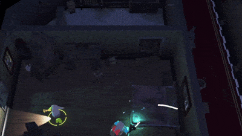

PROJET 03 / DÉVELOPPEMENT EN ÉQUIPE
Ghouls’n’Fools.
Un jeu multijoueur local d’un niveau, créé par une équipe de six personnes. Les joueurs coopèrent pour s’échapper d’un hôtel hanté, en utilisant des lampes torches et un aspirateur à améliorer pour affronter les fantômes.
- MON RÔLE
- Responsable d’équipe et programmeur gameplay
- CONTEXTE
- Équipe de 6
- TECHNOLOGIES
- UNITY / C# / COOP LOCALE

01
Ma contribution
En plus de diriger l’équipe, j’ai travaillé sur la boucle de gameplay principale, la conception et le fonctionnement de l’interface, ainsi que sur la fluidité du jeu. La programmation était partagée au sein de l’équipe : l’IA des fantômes, par exemple, a été réalisée par un autre membre.
02
D’une idée à une boucle jouable
Environ la moitié de mes responsabilités consistait à reprendre les mécaniques prototypées séparément par les game designers et à les réunir dans le jeu final. Il fallait relier les systèmes, résoudre les problèmes d’intégration et affiner leur fonctionnement ensemble dans l’expérience de coopération locale.
03
Une expérimentation non retenue
Au début du développement, j’ai expérimenté avec un shader HLSL personnalisé. Il a finalement été abandonné : il fait donc partie de l’histoire du développement, mais pas des fonctionnalités du jeu publié.
04
Le résultat d’un travail d’équipe
Le jeu terminé reflète le travail de toute l’équipe. La page itch.io propose le téléchargement, la bande-annonce et les journaux de développement pour découvrir plus en détail la réalisation du projet.